📋 Общая информация
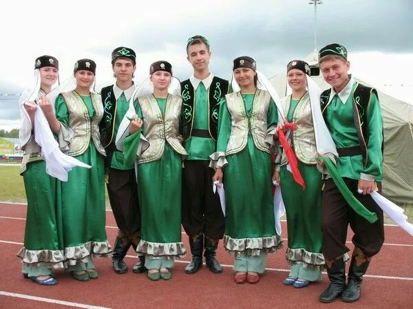
Численность
В России проживает около 4,7 миллионов татар. Это второй по численности народ страны после русских. Также проживают в Казахстане, Узбекистане, Украине.
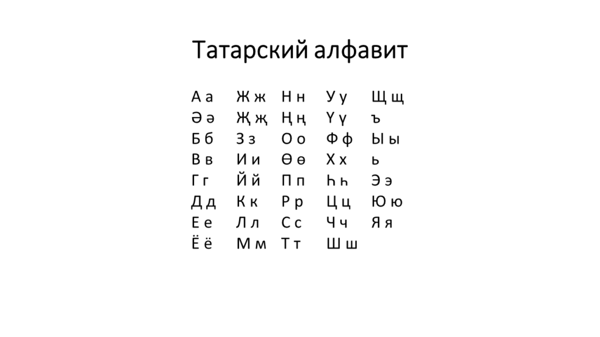
Язык
Татарский язык относится к кыпчакской группе тюркских языков. Исторически писался арабицей, латиницей, с 1939 года — кириллицей. Близок к башкирскому и казахскому.
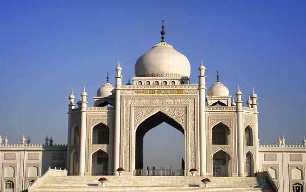
Религия
Ислам (суннитского толка). Принят в 922 году при князе Алмуше. Татарский ислам отличается умеренностью, синкретизмом с древними традициями.
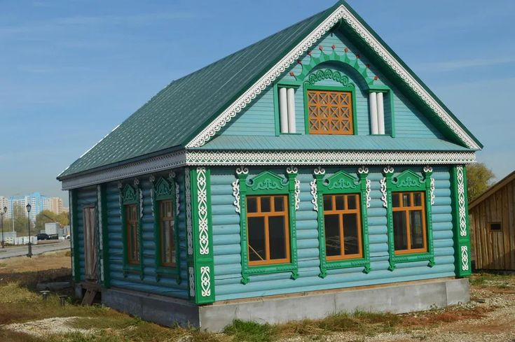
Расселение
Основное население Татарстана, Башкортостана, Удмуртии. Крупные диаспоры в Москве, Поволжье, Сибири и за рубежом — в Турции, Китае, Финляндии, США.
🎭 Традиции и культура
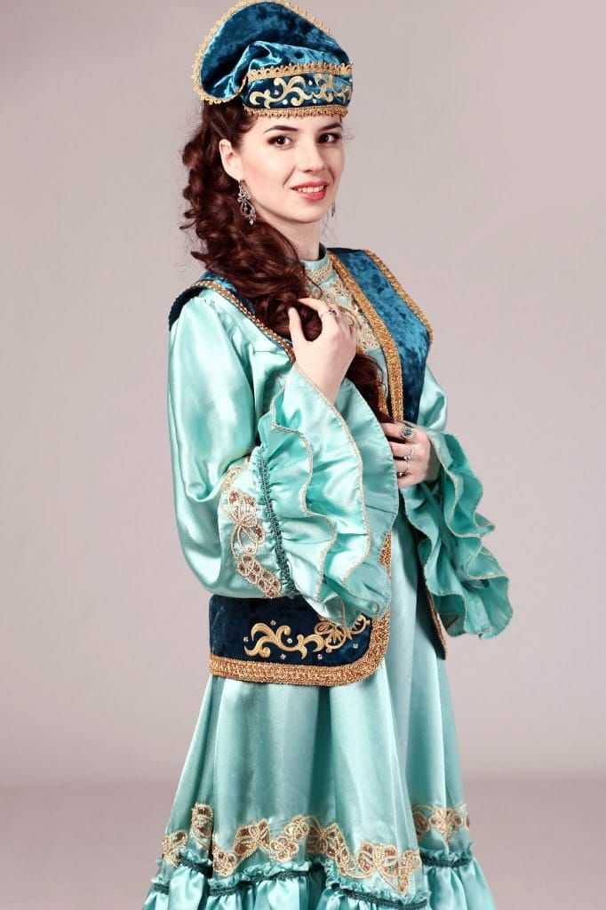
Национальный костюм
Женщины носили длинное платье «кальфак» с вышивкой, головной убор «кошмау» (венец замужней женщины). Мужчины — рубаху «зибин», штаны «шталбар», безрукавку «жилет».
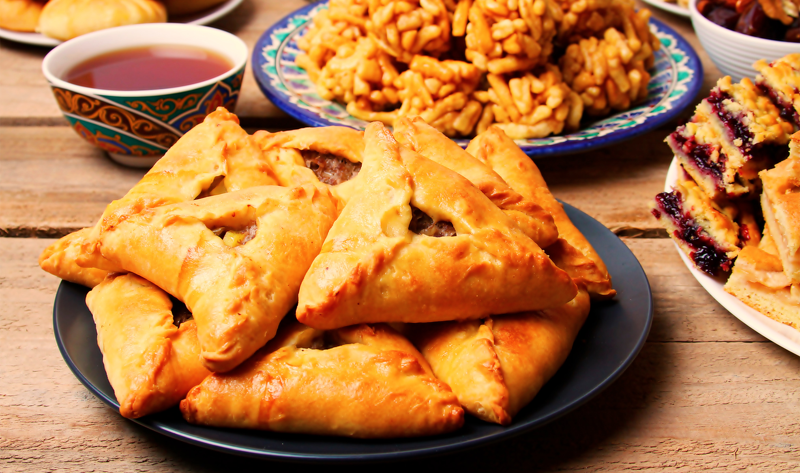
Кухня
Эчпочмак (треугольный пирожок с мясом и бульоном внутри), чак-чак (сладость из теста с мёдом), кыстыбый (лепёшка с картошкой), бэлеш, токмач. Чай с мятой и барбарисом.
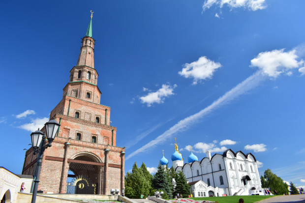
Архитектура
Казанский Кремль (ЮНЕСКО), мечеть Кул Шариф, башня Сююмбике. Традиционные дома с элементами деревянного зодчества и восточными мотивами.
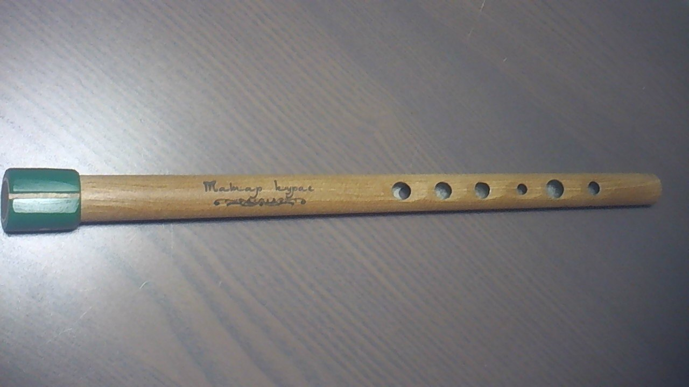
Музыка и танцы
Курай (флейта из ивового корня) и кубыз (скрипка) — древние инструменты. Татарская пляска «тулпар» и «кара куез» — энергичные групповые танцы.
🎉 Народные праздники
-
Ураза-байрам (Ид аль-Фитр)
Окончание Рамадана. Праздничный намаз, угощения, подарки детям, помощь бедным. Готовят бэлеш, чак-чак.
-
Курбан-байрам (Ид аль-Адха)
Праздник жертвоприношения. Забой барана, раздача мяса родным и бедным, семейные застолья.
-
Сабантуй
Древний тюркский праздник плуга. Борьба куреш, скачки, бег в мешках, национальная борьба, конкурсы красоты.
-
Навруз
Весенний праздник Нового года по лунному календарю. Символ обновления природы, зажигание костров.
📸 Галерея
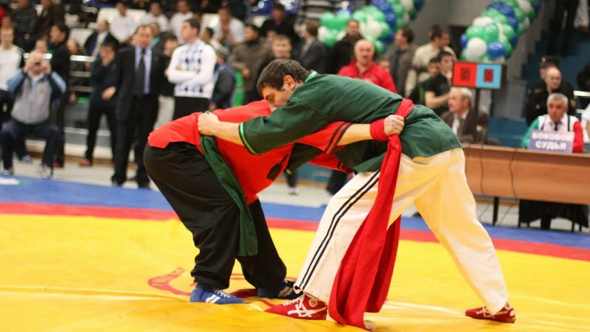
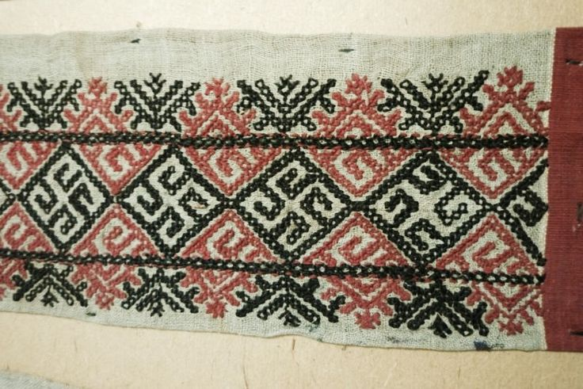
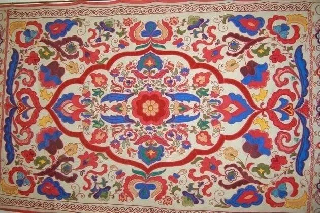
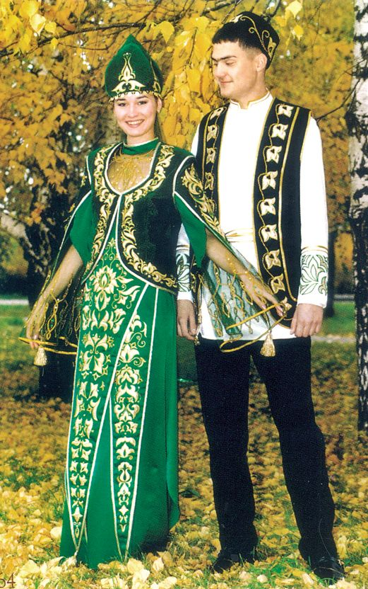
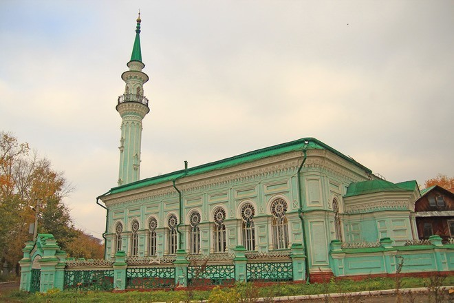
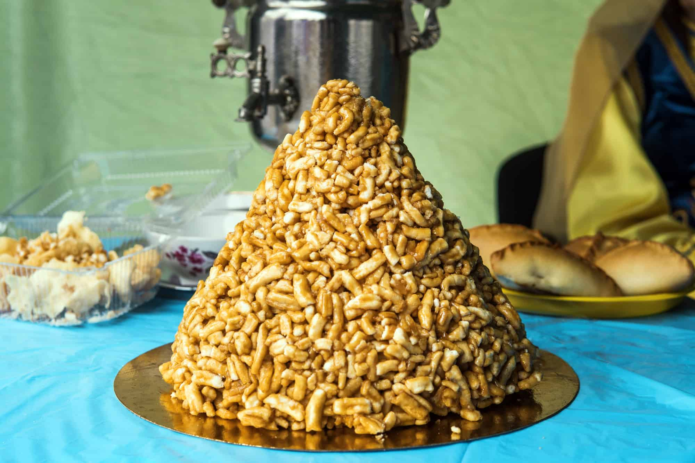
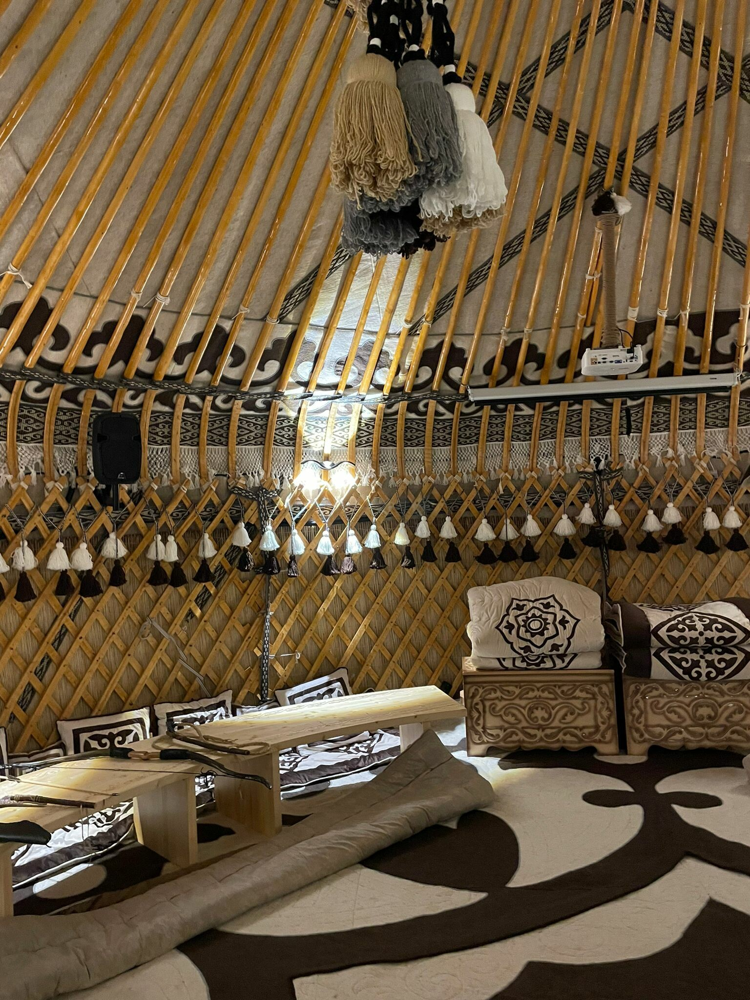
💡 Интересные факты
🏛️ Волжская Булгария
Предки татар основали государство Волжская Булгария в VII веке — один из древнейших центров цивилизации в Поволжье.
📚 Книжное дело
Татары имели развитое книжное дело ещё до прихода русских. Первая татарская типография появилась в 1801 году.
🎭 Театр
Татарский драматический театр имени Галиасгара Камала — один из старейших в России (основан в 1906).
🎯 Викторина: Насколько хорошо вы знаете татарскую культуру?
Ответьте на вопросы на основе информации с этой страницы.